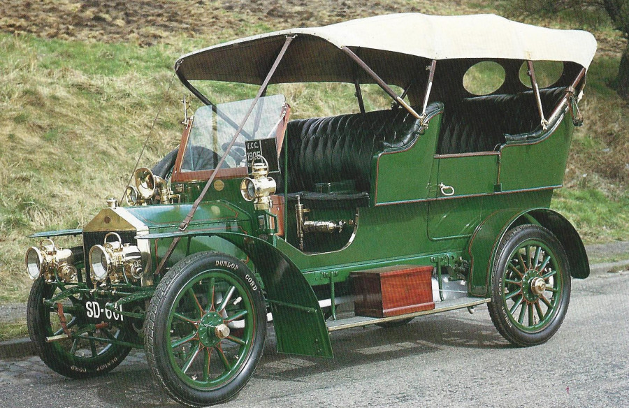
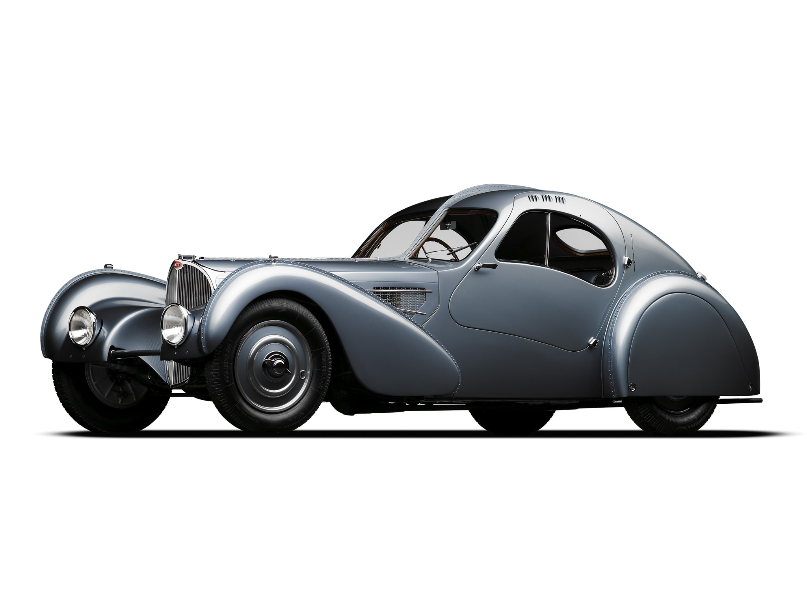
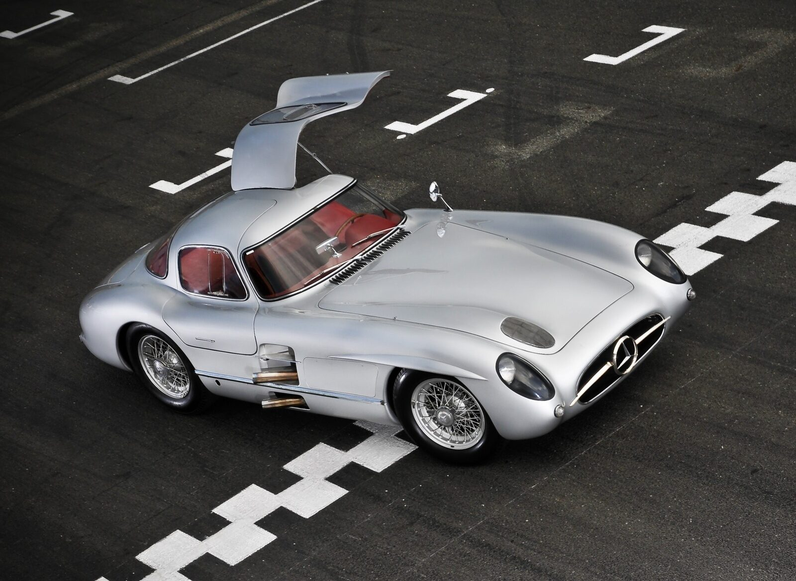

Collection

Rolls-Royce 15 HP (1904-1905)
a rare and historic vehicle produced by Royce Ltd., the company founded by Henry Royce.

Bugatti Type 57SC Atlantic (1936-1938)
a rare and iconic grand tourer produced by Bugatti from 1936 to 1938.

Ferrari 250 GTO (1962-1964)
grand tourer produced by Ferrari from 1962 to 1964 for homologation into the FIA’s Group 3 Grand Touring Car category.
Aston Martin DBR1 (1956)
sports racing car built by Aston Martin in 1956, designed by Ted Cutting, and intended for the World Sportscar Championship and non-championship sportscar races.

Mercedes-Benz 300 SLR Uhlenhaut Coupe (1955)
The Mercedes-Benz 300 SLR Uhlenhaut Coupe is a rare and iconic vehicle, with only two units ever produced.

McLaren F1 LM (1995)
Originally, only five LM models were made to honor McLaren’s victory at Le Mans.